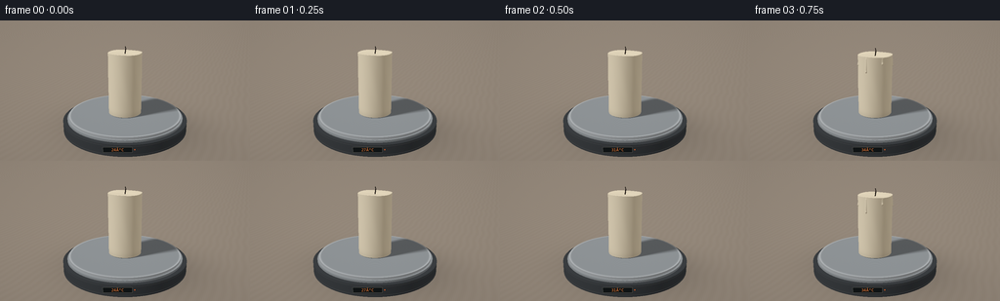
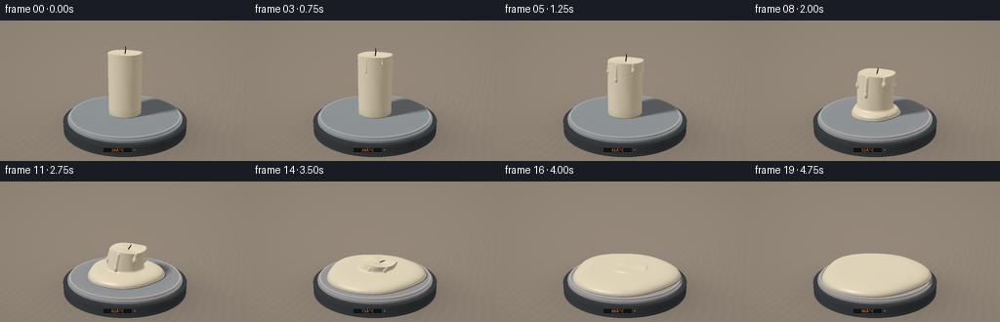

CODING AGENTS AS PIXEL WORLD MODELS
traex/GPT-6.1-Sol · phygen_097
点击播放 · 原生 RGB 像素
逐轮保存的候选
回放视频、检查图与代码变化。
每份候选均可单独播放。实际图片检查记录在下方工具轨迹中。
候选 01播放与检查图
点击播放 · 原生 RGB 像素


展开代码变化
--- 上一保存版本
+++ 本次保存版本
@@ -0,0 +1,264 @@
+"""Procedural RGB timelapse: externally heated ivory candle melting on a hotplate.
+All geometry, illumination and materials are computed locally with numpy/PIL.
+"""
+from pathlib import Path
+import numpy as np
+from PIL import Image, ImageDraw, ImageFont, ImageFilter
+import artifact_io
+
+ROOT=Path(__file__).resolve().parent
+W,H,S=256,144,3
+WW,HH=W*S,H*S
+rng=np.random.default_rng(14)
+
+def norm(v):
+ return v/np.maximum(np.linalg.norm(v,axis=-1,keepdims=True),1e-9)
+def smooth(a,b,k):
+ h=np.clip(.5+.5*(b-a)/k,0,1)
+ return b*(1-h)+a*h-k*h*(1-h)
+def capsule(p,a,b,r):
+ pa=p-a; ba=b-a
+ h=np.clip(np.sum(pa*ba,axis=-1)/np.sum(ba*ba),0,1)
+ return np.linalg.norm(pa-h[...,None]*ba,axis=-1)-r
+
+CAM=np.array([2.8,-6.7,3.35])
+TARGET=np.array([0.,0.,1.04])
+fwd=norm(TARGET-CAM); right=norm(np.cross(fwd,[0,0,1])); up=np.cross(right,fwd)
+yy,xx=np.mgrid[0:HH,0:WW]
+focal=WW*1.13
+D=norm(fwd+(xx[...,None]+.5-WW/2)/focal*right-(yy[...,None]+.5-HH/2)/focal*up).reshape(-1,3)
+O=np.broadcast_to(CAM,D.shape)
+LIGHT=norm(np.array([-3.5,-4.5,6.0]))
+FILL=norm(np.array([3.3,2.,4.]))
+VIEW=norm(CAM-TARGET)
+
+class Wax:
+ def __init__(self,t):
+ u=np.clip((t-.055)/.945,0,1)
+ self.m=u*u*(3-2*u)
+ m=self.m
+ self.h=1.62*(1-.978*m)
+ self.r=.43+.055*np.sin(np.pi*m)
+ self.z=.445
+ original=np.pi*.43**2*1.62
+ remaining=np.pi*self.r**2*self.h
+ self.ph=.155
+ self.R=np.sqrt(.23**2+max(0,original-remaining)/(np.pi*self.ph*.88))
+ self.R=min(self.R,1.445)
+ self.poolH=self.ph*np.clip(m*14,0,1)
+ self.drips=[]
+ for i,ang in enumerate([-2.45,-1.7,-.76,.35,1.7]):
+ dep=(.18+.60*m)*[.72,1.15,.48,.84,.6][i]
+ a=np.array([self.r*np.cos(ang)+.15*m,np.sin(ang)*self.r,self.z+self.h-.035])
+ b=np.array([(self.r+.018)*np.cos(ang)+.15*m*(1-dep)**2,np.sin(ang)*(self.r+.018),self.z+self.h*(1-dep)])
+ rr=(.018+.022*np.sin(np.pi*m))*np.clip(m*16,0,1)
+ self.drips.append((a,b,rr))
+ top=self.z+self.h-.035
+ tilt=m*m
+ a=np.array([.15*m,0,top])
+ b=a+np.array([.025+.14*tilt,-.012,.13*(1-tilt)+.02])
+ c=b+np.array([-.016+.10*tilt,.008,.055*(1-tilt)])
+ self.wick=(a,b,c)
+ def dist(self,p,drips=True):
+ m=self.m; z=p[...,2]-self.z
+ q=np.clip(z/self.h,0,1)
+ x=p[...,0]-.15*m*q*q; y=p[...,1]
+ rad=np.sqrt(x*x+y*y); th=np.arctan2(y,x)
+ radius=self.r+.010*np.sin(8*th+z*5)*np.sin(np.pi*q)*(.2+.8*m)
+ # A broad rounded shoulder gradually deforms and subsides.
+ radius+=.027*m*(1-q)**3
+ top=self.h+.018*np.sin(th*3+.4)*np.minimum(rad/.3,1)*(.4+m)-.032*np.exp(-(rad/.20)**2)
+ d=np.maximum(np.maximum(rad-radius,z-self.h-(top-self.h)), -z)-.012
+ if self.poolH>.0001:
+ rp=np.sqrt(p[...,0]**2+p[...,1]**2)
+ ap=np.arctan2(p[...,1],p[...,0])
+ R=self.R*(1+.034*np.sin(3*ap+.4)+.017*np.cos(5*ap-1))
+ zh=self.poolH*np.sqrt(np.clip(1-(rp/np.maximum(R,.05))**8,0,1))
+ pool=np.maximum(np.maximum(rp-R,z-zh),-z)-.013
+ d=smooth(d,pool,.065)
+ if drips and .015<m<.96:
+ for a,b,r in self.drips:
+ d=smooth(d,capsule(p,a,b,r),.025)
+ # rounded, thickened drops at the lower end of each wax rivulet
+ e=(p-b)/np.array([1.,1.,1.50])
+ drop=np.linalg.norm(e,axis=-1)-r*1.45
+ d=smooth(d,drop,.016)
+ return d
+ def wickdist(self,p):
+ a,b,c=self.wick
+ return np.minimum(capsule(p,a,b,.012),capsule(p,b,c,.009))
+ def both(self,p):
+ return np.minimum(self.dist(p),self.wickdist(p))
+
+def cylinder_hit(ro,rd,r,zlo,zhi):
+ a=rd[:,0]**2+rd[:,1]**2
+ b=2*(ro[:,0]*rd[:,0]+ro[:,1]*rd[:,1])
+ c=ro[:,0]**2+ro[:,1]**2-r*r
+ disc=b*b-4*a*c
+ ts=(-b-np.sqrt(np.maximum(disc,0)))/(2*a)
+ zs=ro[:,2]+ts*rd[:,2]
+ ts=np.where((disc>=0)&(ts>0)&(zs>=zlo)&(zs<=zhi),ts,np.inf)
+ tc=(zhi-ro[:,2])/rd[:,2]
+ pc=ro+rd*tc[:,None]
+ tc=np.where((tc>0)&(pc[:,0]**2+pc[:,1]**2<=r*r),tc,np.inf)
+ top=tc<ts; t=np.minimum(tc,ts)
+ p=ro+rd*np.where(np.isfinite(t),t,0)[:,None]
+ n=norm(np.column_stack((p[:,0],p[:,1],np.zeros(len(p)))))
+ n[top]=[0,0,1]
+ return t,n
+
+def shade(base,n,p,rough=.3,metal=0):
+ nl=np.clip(n@LIGHT,0,1)
+ nf=np.clip(n@FILL,0,1)
+ v=norm(CAM-p)
+ half=norm(LIGHT+v)
+ spec=np.maximum(np.sum(n*half,axis=-1),0)**(30 if rough>.2 else 110)
+ color=base*(.27+.68*nl[:,None]+.18*nf[:,None])
+ color+=spec[:,None]*(.14 if metal==0 else .6)
+ return color
+
+def soft_shadow(p,wax):
+ # Soft contact shadows cast by the entire changing wax shape.
+ tt=np.full(len(p),.035); val=np.ones(len(p))
+ active=np.ones(len(p),bool)
+ for _ in range(24):
+ ids=np.where(active)[0]
+ if not len(ids): break
+ h=wax.dist(p[ids]+LIGHT*tt[ids,None],False)
+ val[ids]=np.minimum(val[ids],8*np.maximum(h,0)/tt[ids])
+ tt[ids]+=np.clip(h,.028,.18)
+ active[ids]=(tt[ids]<3.2)&(val[ids]>.03)
+ return .36+.64*np.clip(val,0,1)
+
+def project(p):
+ v=np.asarray(p)-CAM
+ z=v@fwd
+ return (WW/2+focal*(v@right)/z,HH/2-focal*(v@up)/z)
+
+noise=rng.normal(0,.0018,(HH,WW,3))
+
+def render(t):
+ wax=Wax(t); m=wax.m
+ N=len(D)
+ # Dark, defocused studio backdrop. The table is warm ash wood.
+ grad=yy.reshape(-1)/HH
+ bg=np.column_stack((.145+.062*grad,.167+.058*grad,.18+.05*grad))
+ glow=np.exp(-(((xx.reshape(-1)/WW-.30)/.38)**2+((grad-.24)/.65)**2))
+ bg+=glow[:,None]*np.array([.060,.050,.032])
+ color=bg.copy(); depth=np.full(N,np.inf)
+ tf=(-.018-CAM[2])/D[:,2]
+ pf=O+D*np.maximum(tf,0)[:,None]
+ floor=(tf>0)&(D[:,2]<-.01)
+ ids=np.where(floor)[0]
+ p=pf[ids]
+ grain=.006*np.sin(p[:,0]*28+np.sin(p[:,1]*4))+.0025*np.sin(p[:,0]*146+p[:,1]*2)
+ base=np.array([.37,.31,.25])[None,:]+grain[:,None]
+ n=np.tile([0.,0.,1.],(len(ids),1))
+ fc=shade(base,n,p)
+ # Large diffuse shadow beneath the appliance.
+ shadow=np.exp(-((p[:,0]-.2)**2/2.9+(p[:,1]-.12)**2/2.0))
+ fc*=1-.45*shadow[:,None]
+ color[ids]=fc;depth[ids]=tf[ids]
+ # Matte graphite hotplate, polished metal pan, and thin raised silver rim.
+ objects=[(1.68,.012,.30,'base'),(1.52,.30,.414,'metal'),(1.565,.30,.354,'rim')]
+ for r,zl,zh,mat in objects:
+ hit,normal=cylinder_hit(O,D,r,zl,zh)
+ mask=hit<depth; idx=np.where(mask)[0]
+ if not len(idx):continue
+ p=O[idx]+D[idx]*hit[idx,None]; n=normal[idx]
+ if mat=='base':
+ base=np.tile([.055,.062,.068],(len(idx),1))
+ c=shade(base,n,p,.4)
+ # Subtle machining edges around the housing.
+ c+=(np.exp(-((p[:,2]-.055)/.009)**2)+np.exp(-((p[:,2]-.265)/.008)**2))[:,None]*.017
+ else:
+ radial=np.sqrt(p[:,0]**2+p[:,1]**2)
+ brush=.006*np.sin(radial*280)
+ base=np.tile([.34,.365,.38],(len(idx),1))+brush[:,None]
+ c=shade(base,n,p,.13,1)
+ c+=np.exp(-((radial-1.50)/.025)**2)[:,None]*.17
+ sh=soft_shadow(p+n*.006,wax)
+ c*=sh[:,None]
+ # A restrained, warm heat glow near the exposed outer plate.
+ warm=m*.065*np.exp(-((radial-1.43)/.21)**2)
+ c+=warm[:,None]*np.array([1.,.35,.06])
+ color[idx]=c;depth[idx]=hit[idx]
+ # Sphere tracing restricted to a box surrounding candle and liquid pool.
+ lower=np.array([-1.52,-1.52,.419]); upper=np.array([1.52,1.52,2.26])
+ ta=(lower-CAM)/D;tb=(upper-CAM)/D
+ near=np.max(np.minimum(ta,tb),axis=-1);far=np.min(np.maximum(ta,tb),axis=-1)
+ active=(far>near)&(far>0)&(near<depth)
+ rayids=np.where(active)[0]
+ dist=np.maximum(near[rayids],0)+.0003
+ lim=np.minimum(far[rayids],depth[rayids])
+ alive=np.ones(len(rayids),bool); hits=np.zeros(len(rayids),bool)
+ for step in range(100):
+ loc=np.where(alive)[0]
+ if not len(loc):break
+ idx=rayids[loc];p=CAM+D[idx]*dist[loc,None]
+ sd=wax.both(p)
+ found=sd<.0012
+ hits[loc[found]]=True;alive[loc[found]]=False
+ remain=loc[~found]
+ dist[remain]+=np.maximum(sd[~found]*.78,.0005)
+ alive[remain]&=dist[remain]<lim[remain]
+ loc=np.where(hits)[0];idx=rayids[loc]
+ p=CAM+D[idx]*dist[loc,None]
+ if len(idx):
+ eps=.0012
+ normal=[]
+ for axis in range(3):
+ e=np.zeros(3);e[axis]=eps
+ normal.append(wax.both(p+e)-wax.both(p-e))
+ n=norm(np.stack(normal,axis=-1))
+ iswick=wax.wickdist(p)<wax.dist(p)+.0005
+ # Ivory wax: opaque core, subsurface warm edge, glossy melt films.
+ micro=.003*np.sin(p[:,2]*210+np.sin(p[:,0]*25))*(1-m)
+ base=np.tile([.84,.754,.58],(len(p),1))+micro[:,None]
+ c=shade(base,n,p,.28)
+ diffuse=np.clip(n@LIGHT,0,1)
+ c+=np.array([.065,.040,.013])[None,:]*(1-diffuse[:,None])
+ # Broad softbox highlight on the curved pillar.
+ reflected=norm(2*np.sum(n*LIGHT,axis=-1)[:,None]*n-LIGHT)
+ view=norm(CAM-p)
+ refl=np.clip(np.sum(reflected*view,axis=-1),0,1)
+ c+=((refl**24)*(.075+.09*m))[:,None]*np.array([1.,.91,.72])
+ # Gentle occlusion along wax rivulets and at the base.
+ occl=np.exp(-((p[:,2]-wax.z)/.10)**2)*.10
+ c*=1-occl[:,None]
+ c[iswick]=shade(np.tile([.030,.021,.014],(iswick.sum(),1)),n[iswick],p[iswick],.5)
+ color[idx]=c;depth[idx]=dist[loc]
+ # Filmic exposure and restrained photographic grain.
+ color=np.clip(color.reshape(HH,WW,3)+noise,0,1)
+ color=color**(1/2.05)
+ vign=1-.12*((xx/WW-.5)**2+(yy/HH-.45)**2)
+ rgb=np.uint8(np.clip(color*vign[...,None],0,1)*255)
+ im=Image.fromarray(rgb)
+ draw=ImageDraw.Draw(im)
+ # Small physical temperature display, embedded in front of the heater.
+ # The display faces the viewer; its numerals rise with the hotplate temperature.
+ center=np.array([.47,-1.56,.158])
+ horiz=right.copy();horiz[2]=0;horiz=norm(horiz)
+ verts=[project(center+horiz*dx+np.array([0,0,dz])) for dx,dz in [(-.33,-.065),(.33,-.065),(.33,.065),(-.33,.065)]]
+ draw.polygon(verts,fill=(15,19,20))
+ draw.line(verts+[verts[0]],fill=(87,87,79),width=1)
+ xp,yp=project(center)
+ font=ImageFont.truetype('/usr/share/fonts/truetype/dejavu/DejaVuSansMono.ttf',13)
+ temp=24+round(66*t)
+ text=f'{temp:02d}°C'
+ bbox=draw.textbbox((0,0),text,font=font)
+ draw.text((xp-(bbox[2]-bbox[0])/2,yp-8),text,font=font,fill=(245,125,56))
+ # A tiny power LED, separate from the temperature numerals.
+ lx,ly=project(center+horiz*.39)
+ draw.ellipse((lx-1.6,ly-1.6,lx+1.6,ly+1.6),fill=(232,89+int(40*t),32))
+ return np.asarray(im.resize((W,H),Image.Resampling.LANCZOS))
+
+def main():
+ frames=[]
+ for i in range(20):
+ frames.append(render(i/19))
+ print(f'Rendered {i+1}/20',flush=True)
+ artifact_io.save(np.stack(frames).astype(np.uint8),ROOT)
+ print('Saved RGB video artifacts.',flush=True)
+
+if __name__=='__main__':main()
候选 02播放与检查图
点击播放 · 原生 RGB 像素

展开代码变化
--- 上一保存版本
+++ 本次保存版本
@@ -53,7 +53,7 @@
b=np.array([(self.r+.018)*np.cos(ang)+.15*m*(1-dep)**2,np.sin(ang)*(self.r+.018),self.z+self.h*(1-dep)])
rr=(.018+.022*np.sin(np.pi*m))*np.clip(m*16,0,1)
self.drips.append((a,b,rr))
- top=self.z+self.h-.035
+ top=max(self.z+self.h-.035, self.z+self.poolH+.004)
tilt=m*m
a=np.array([.15*m,0,top])
b=a+np.array([.025+.14*tilt,-.012,.13*(1-tilt)+.02])
@@ -245,7 +245,7 @@
xp,yp=project(center)
font=ImageFont.truetype('/usr/share/fonts/truetype/dejavu/DejaVuSansMono.ttf',13)
temp=24+round(66*t)
- text=f'{temp:02d}°C'
+ text=f'{temp:02d}\u00b0C'
bbox=draw.textbbox((0,0),text,font=font)
draw.text((xp-(bbox[2]-bbox[0])/2,yp-8),text,font=font,fill=(245,125,56))
# A tiny power LED, separate from the temperature numerals.
候选 03播放与检查图
可观测工具轨迹
实际执行的命令与返回图片。
命令 1exit 0
/bin/bash -lc "ls -la && cat prompt.txt && printf '\\n---RULES---\\n' && cat GENERATION_RULES.md && printf '\\n---SPEC---\\n' && cat task_spec.json"
命令 2exit 0
/bin/bash -lc 'cat artifact_io.py'
命令 3exit 0
/bin/bash -lc "fc-list | head -6 && python - <<'PY'
import numpy,PIL
print('numpy/PIL available')
PY"命令 4exit 0
/bin/bash -lc "cat > generate.py <<'PY'
\"\"\"Procedural RGB timelapse: externally heated ivory candle melting on a hotplate.
All geometry, illumination and materials are computed locally with numpy/PIL.
\"\"\"
from pathlib import Path
import numpy as np
from PIL import Image, ImageDraw, ImageFont, ImageFilter
import artifact_io
ROOT=Path(__file__).resolve().parent
W,H,S=256,144,3
WW,HH=W*S,H*S
rng=np.random.default_rng(14)
def norm(v):
return v/np.maximum(np.linalg.norm(v,axis=-1,keepdims=True),1e-9)
def smooth(a,b,k):
h=np.clip(.5+.5*(b-a)/k,0,1)
return b*(1-h)+a*h-k*h*(1-h)
def capsule(p,a,b,r):
pa=p-a; ba=b-a
h=np.clip(np.sum(pa*ba,axis=-1)/np.sum(ba*ba),0,1)
return np.linalg.norm(pa-h[...,None]*ba,axis=-1)-r
CAM=np.array([2.8,-6.7,3.35])
TARGET=np.array([0.,0.,1.04])
fwd=norm(TARGET-CAM); right=norm(np.cross(fwd,[0,0,1])); up=np.cross(right,fwd)
yy,xx=np.mgrid[0:HH,0:WW]
focal=WW*1.13
D=norm(fwd+(xx[...,None]+.5-WW/2)/focal*right-(yy[...,None]+.5-HH/2)/focal*up).reshape(-1,3)
O=np.broadcast_to(CAM,D.shape)
LIGHT=norm(np.array([-3.5,-4.5,6.0]))
FILL=norm(np.array([3.3,2.,4.]))
VIEW=norm(CAM-TARGET)
class Wax:
def __init__(self,t):
u=np.clip((t-.055)/.945,0,1)
self.m=u*u*(3-2*u)
m=self.m
self.h=1.62*(1-.978*m)
self.r=.43+.055*np.sin(np.pi*m)
self.z=.445
original=np.pi*.43**2*1.62
remaining=np.pi*self.r**2*self.h
self.ph=.155
self.R=np.sqrt(.23**2+max(0,original-remaining)/(np.pi*self.ph*.88))
self.R=min(self.R,1.445)
self.poolH=self.ph*np.clip(m*14,0,1)
self.drips=[]
for i,ang in enumerate([-2.45,-1.7,-.76,.35,1.7]):
dep=(.18+.60*m)*[.72,1.15,.48,.84,.6][i]
a=np.array([self.r*np.cos(ang)+.15*m,np.sin(ang)*self.r,self.z+self.h-.035])
b=np.array([(self.r+.018)*np.cos(ang)+.15*m*(1-dep)**2,np.sin(ang)*(self.r+.018),self.z+self.h*(1-dep)])
rr=(.018+.022*np.sin(np.pi*m))*np.clip(m*16,0,1)
self.drips.append((a,b,rr))
top=self.z+self.h-.035
tilt=m*m
a=np.array([.15*m,0,top])
b=a+np.array([.025+.14*tilt,-.012,.13*(1-tilt)+.02])
c=b+np.array([-.016+.10*tilt,.008,.055*(1-tilt)])
self.wick=(a,b,c)
def dist(self,p,drips=True):
m=self.m; z=p[...,2]-self.z
q=np.clip(z/self.h,0,1)
x=p[...,0]-.15*m*q*q; y=p[...,1]
rad=np.sqrt(x*x+y*y); th=np.arctan2(y,x)
radius=self.r+.010*np.sin(8*th+z*5)*np.sin(np.pi*q)*(.2+.8*m)
# A broad rounded shoulder gradually deforms and subsides.
radius+=.027*m*(1-q)**3
top=self.h+.018*np.sin(th*3+.4)*np.minimum(rad/.3,1)*(.4+m)-.032*np.exp(-(rad/.20)**2)
d=np.maximum(np.maximum(rad-radius,z-self.h-(top-self.h)), -z)-.012
if self.poolH>.0001:
rp=np.sqrt(p[...,0]**2+p[...,1]**2)
ap=np.arctan2(p[...,1],p[...,0])
R=self.R*(1+.034*np.sin(3*ap+.4)+.017*np.cos(5*ap-1))
zh=self.poolH*np.sqrt(np.clip(1-(rp/np.maximum(R,.05))**8,0,1))
pool=np.maximum(np.maximum(rp-R,z-zh),-z)-.013
d=smooth(d,pool,.065)
if drips and .015<m<.96:
for a,b,r in self.drips:
d=smooth(d,capsule(p,a,b,r),.025)
# rounded, thickened drops at the lower end of each wax rivulet
e=(p-b)/np.array([1.,1.,1.50])
drop=np.linalg.norm(e,axis=-1)-r*1.45
d=smooth(d,drop,.016)
return d
def wickdist(self,p):
a,b,c=self.wick
return np.minimum(capsule(p,a,b,.012),capsule(p,b,c,.009))
def both(self,p):
return np.minimum(self.dist(p),self.wickdist(p))
def cylinder_hit(ro,rd,r,zlo,zhi):
a=rd[:,0]**2+rd[:,1]**2
b=2*(ro[:,0]*rd[:,0]+ro[:,1]*rd[:,1])
c=ro[:,0]**2+ro[:,1]**2-r*r
disc=b*b-4*a*c
ts=(-b-np.sqrt(np.maximum(disc,0)))/(2*a)
zs=ro[:,2]+ts*rd[:,2]
ts=np.where((disc>=0)&(ts>0)&(zs>=zlo)&(zs<=zhi),ts,np.inf)
tc=(zhi-ro[:,2])/rd[:,2]
pc=ro+rd*tc[:,None]
tc=np.where((tc>0)&(pc[:,0]**2+pc[:,1]**2<=r*r),tc,np.inf)
top=tc<ts; t=np.minimum(tc,ts)
p=ro+rd*np.where(np.isfinite(t),t,0)[:,None]
n=norm(np.column_stack((p[:,0],p[:,1],np.zeros(len(p)))))
n[top]=[0,0,1]
return t,n
def shade(base,n,p,rough=.3,metal=0):
nl=np.clip(n@LIGHT,0,1)
nf=np.clip(n@FILL,0,1)
v=norm(CAM-p)
half=norm(LIGHT+v)
spec=np.maximum(np.sum(n*half,axis=-1),0)**(30 if rough>.2 else 110)
color=base*(.27+.68*nl[:,None]+.18*nf[:,None])
color+=spec[:,None]*(.14 if metal==0 else .6)
return color
def soft_shadow(p,wax):
# Soft contact shadows cast by the entire changing wax shape.
tt=np.full(len(p),.035); val=np.ones(len(p))
active=np.ones(len(p),bool)
for _ in range(24):
ids=np.where(active)[0]
if not len(ids): break
h=wax.dist(p[ids]+LIGHT*tt[ids,None],False)
val[ids]=np.minimum(val[ids],8*np.maximum(h,0)/tt[ids])
tt[ids]+=np.clip(h,.028,.18)
active[ids]=(tt[ids]<3.2)&(val[ids]>.03)
return .36+.64*np.clip(val,0,1)
def project(p):
v=np.asarray(p)-CAM
z=v@fwd
return (WW/2+focal*(v@right)/z,HH/2-focal*(v@up)/z)
noise=rng.normal(0,.0018,(HH,WW,3))
def render(t):
wax=Wax(t); m=wax.m
N=len(D)
# Dark, defocused studio backdrop. The table is warm ash wood.
grad=yy.reshape(-1)/HH
bg=np.column_stack((.145+.062*grad,.167+.058*grad,.18+.05*grad))
glow=np.exp(-(((xx.reshape(-1)/WW-.30)/.38)**2+((grad-.24)/.65)**2))
bg+=glow[:,None]*np.array([.060,.050,.032])
color=bg.copy(); depth=np.full(N,np.inf)
tf=(-.018-CAM[2])/D[:,2]
pf=O+D*np.maximum(tf,0)[:,None]
floor=(tf>0)&(D[:,2]<-.01)
ids=np.where(floor)[0]
p=pf[ids]
grain=.006*np.sin(p[:,0]*28+np.sin(p[:,1]*4))+.0025*np.sin(p[:,0]*146+p[:,1]*2)
base=np.array([.37,.31,.25])[None,:]+grain[:,None]
n=np.tile([0.,0.,1.],(len(ids),1))
fc=shade(base,n,p)
# Large diffuse shadow beneath the appliance.
shadow=np.exp(-((p[:,0]-.2)**2/2.9+(p[:,1]-.12)**2/2.0))
fc*=1-.45*shadow[:,None]
color[ids]=fc;depth[ids]=tf[ids]
# Matte graphite hotplate, polished metal pan, and thin raised silver rim.
objects=[(1.68,.012,.30,'base'),(1.52,.30,.414,'metal'),(1.565,.30,.354,'rim')]
for r,zl,zh,mat in objects:
hit,normal=cylinder_hit(O,D,r,zl,zh)
mask=hit<depth; idx=np.where(mask)[0]
if not len(idx):continue
p=O[idx]+D[idx]*hit[idx,None]; n=normal[idx]
if mat=='base':
base=np.tile([.055,.062,.068],(len(idx),1))
c=shade(base,n,p,.4)
# Subtle machining edges around the housing.
c+=(np.exp(-((p[:,2]-.055)/.009)**2)+np.exp(-((p[:,2]-.265)/.008)**2))[:,None]*.017
else:
radial=np.sqrt(p[:,0]**2+p[:,1]**2)
brush=.006*np.sin(radial*280)
base=np.tile([.34,.365,.38],(len(idx),1))+brush[:,None]
c=shade(base,n,p,.13,1)
c+=np.exp(-((radial-1.50)/.025)**2)[:,None]*.17
sh=soft_shadow(p+n*.006,wax)
c*=sh[:,None]
# A restrained, warm heat glow near the exposed outer plate.
warm=m*.065*np.exp(-((radial-1.43)/.21)**2)
c+=warm[:,None]*np.array([1.,.35,.06])
color[idx]=c;depth[idx]=hit[idx]
# Sphere tracing restricted to a box surrounding candle and liquid pool.
lower=np.array([-1.52,-1.52,.419]); upper=np.array([1.52,1.52,2.26])
ta=(lower-CAM)/D;tb=(upper-CAM)/D
near=np.max(np.minimum(ta,tb),axis=-1);far=np.min(np.maximum(ta,tb),axis=-1)
active=(far>near)&(far>0)&(near<depth)
rayids=np.where(active)[0]
dist=np.maximum(near[rayids],0)+.0003
lim=np.minimum(far[rayids],depth[rayids])
alive=np.ones(len(rayids),bool); hits=np.zeros(len(rayids),bool)
for step in range(100):
loc=np.where(alive)[0]
if not len(loc):break
idx=rayids[loc];p=CAM+D[idx]*dist[loc,None]
sd=wax.both(p)
found=sd<.0012
hits[loc[found]]=True;alive[loc[found]]=False
remain=loc[~found]
dist[remain]+=np.maximum(sd[~found]*.78,.0005)
alive[remain]&=dist[remain]<lim[remain]
loc=np.where(hits)[0];idx=rayids[loc]
p=CAM+D[idx]*dist[loc,None]
if len(idx):
eps=.0012
normal=[]
for axis in range(3):
e=np.zeros(3);e[axis]=eps
normal.append(wax.both(p+e)-wax.both(p-e))
n=norm(np.stack(normal,axis=-1))
iswick=wax.wickdist(p)<wax.dist(p)+.0005
# Ivory wax: opaque core, subsurface warm edge, glossy melt films.
micro=.003*np.sin(p[:,2]*210+np.sin(p[:,0]*25))*(1-m)
base=np.tile([.84,.754,.58],(len(p),1))+micro[:,None]
c=shade(base,n,p,.28)
diffuse=np.clip(n@LIGHT,0,1)
c+=np.array([.065,.040,.013])[None,:]*(1-diffuse[:,None])
# Broad softbox highlight on the curved pillar.
reflected=norm(2*np.sum(n*LIGHT,axis=-1)[:,None]*n-LIGHT)
view=norm(CAM-p)
refl=np.clip(np.sum(reflected*view,axis=-1),0,1)
c+=((refl**24)*(.075+.09*m))[:,None]*np.array([1.,.91,.72])
# Gentle occlusion along wax rivulets and at the base.
occl=np.exp(-((p[:,2]-wax.z)/.10)**2)*.10
c*=1-occl[:,None]
c[iswick]=shade(np.tile([.030,.021,.014],(iswick.sum(),1)),n[iswick],p[iswick],.5)
color[idx]=c;depth[idx]=dist[loc]
# Filmic exposure and restrained photographic grain.
color=np.clip(color.reshape(HH,WW,3)+noise,0,1)
color=color**(1/2.05)
vign=1-.12*((xx/WW-.5)**2+(yy/HH-.45)**2)
rgb=np.uint8(np.clip(color*vign[...,None],0,1)*255)
im=Image.fromarray(rgb)
draw=ImageDraw.Draw(im)
# Small physical temperature display, embedded in front of the heater.
# The display faces the viewer; its numerals rise with the hotplate temperature.
center=np.array([.47,-1.56,.158])
horiz=right.copy();horiz[2]=0;horiz=norm(horiz)
verts=[project(center+horiz*dx+np.array([0,0,dz])) for dx,dz in [(-.33,-.065),(.33,-.065),(.33,.065),(-.33,.065)]]
draw.polygon(verts,fill=(15,19,20))
draw.line(verts+[verts[0]],fill=(87,87,79),width=1)
xp,yp=project(center)
font=ImageFont.truetype('/usr/share/fonts/truetype/dejavu/DejaVuSansMono.ttf',13)
temp=24+round(66*t)
text=f'{temp:02d}°C'
bbox=draw.textbbox((0,0),text,font=font)
draw.text((xp-(bbox[2]-bbox[0])/2,yp-8),text,font=font,fill=(245,125,56))
# A tiny power LED, separate from the temperature numerals.
lx,ly=project(center+horiz*.39)
draw.ellipse((lx-1.6,ly-1.6,lx+1.6,ly+1.6),fill=(232,89+int(40*t),32))
return np.asarray(im.resize((W,H),Image.Resampling.LANCZOS))
def main():
frames=[]
for i in range(20):
frames.append(render(i/19))
print(f'Rendered {i+1}/20',flush=True)
artifact_io.save(np.stack(frames).astype(np.uint8),ROOT)
print('Saved RGB video artifacts.',flush=True)
if __name__=='__main__':main()
PY
python generate.py"命令 5exit 0
/bin/bash -lc "python - <<'PY'
from pathlib import Path
s=Path('generate.py').read_text()
for l in s.splitlines():
if 'text=f' in l: print(ascii(l))
PY"命令 6exit 0
/bin/bash -lc "python - <<'PY'
from pathlib import Path
p=Path('generate.py');s=p.read_text()
s=s.replace(chr(194)+chr(176),r'\\u00b0')
s=s.replace('top=self.z+self.h-.035','top=max(self.z+self.h-.035, self.z+self.poolH+.004)')
p.write_text(s)
PY"命令 7exit 0
/bin/bash -lc "which ffmpeg || true; ls -lh pixels.npz index.html inspection.png; python - <<'PY'
from pathlib import Path
p=Path('generate.py')
s=p.read_text().replace(\"text=f'{temp:02d}ðC'\", \"text=f'{temp:02d}°C'\")
p.write_text(s)
PY
python generate.py"命令 8exit 0
/bin/bash -lc 'python generate.py'
视觉工具实际返回图片 1

视觉工具实际返回图片 2

保存候选 3 份；完成命令 8 次；可验证图片返回 2 张。原始 API 响应与完整日志保留在本地。